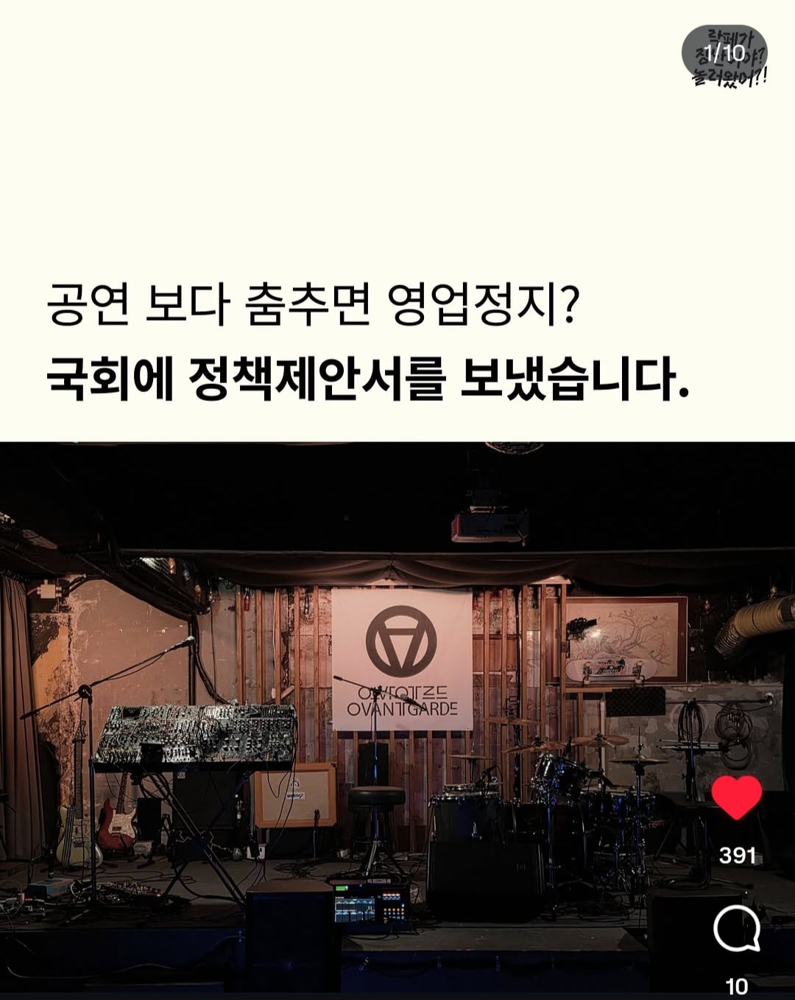
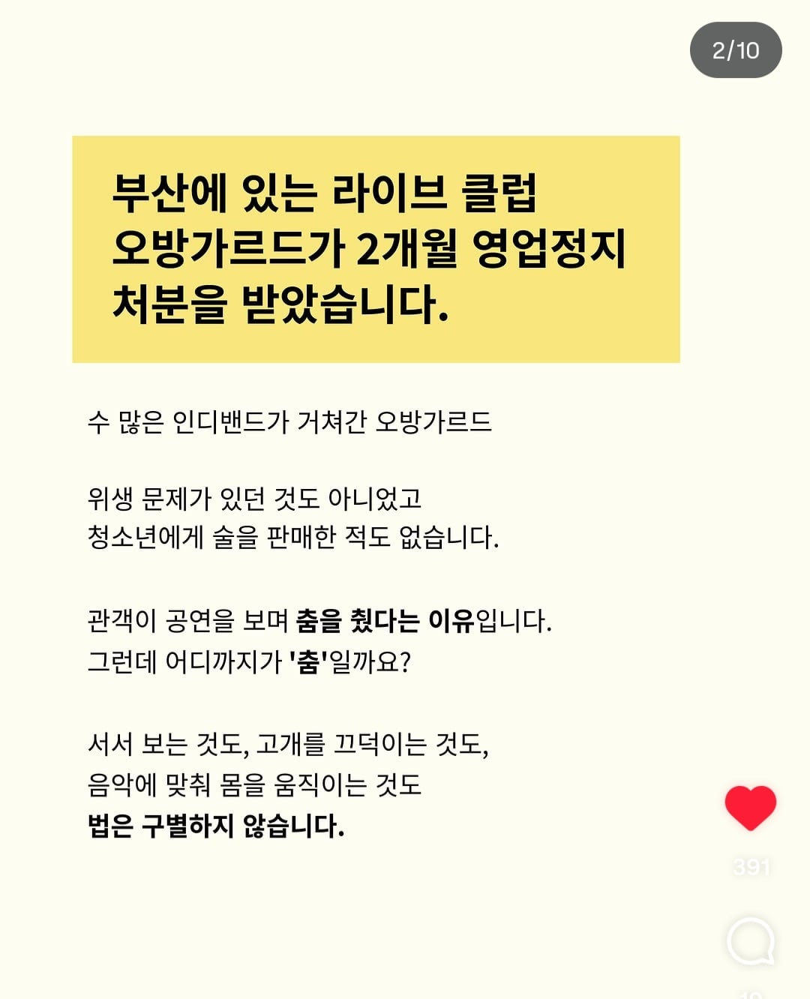
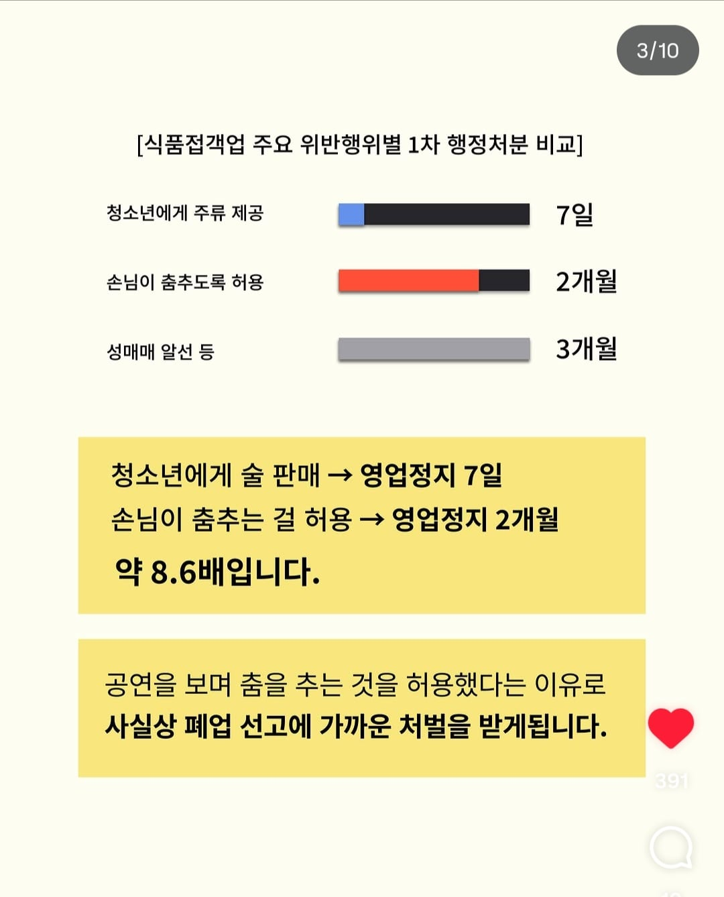
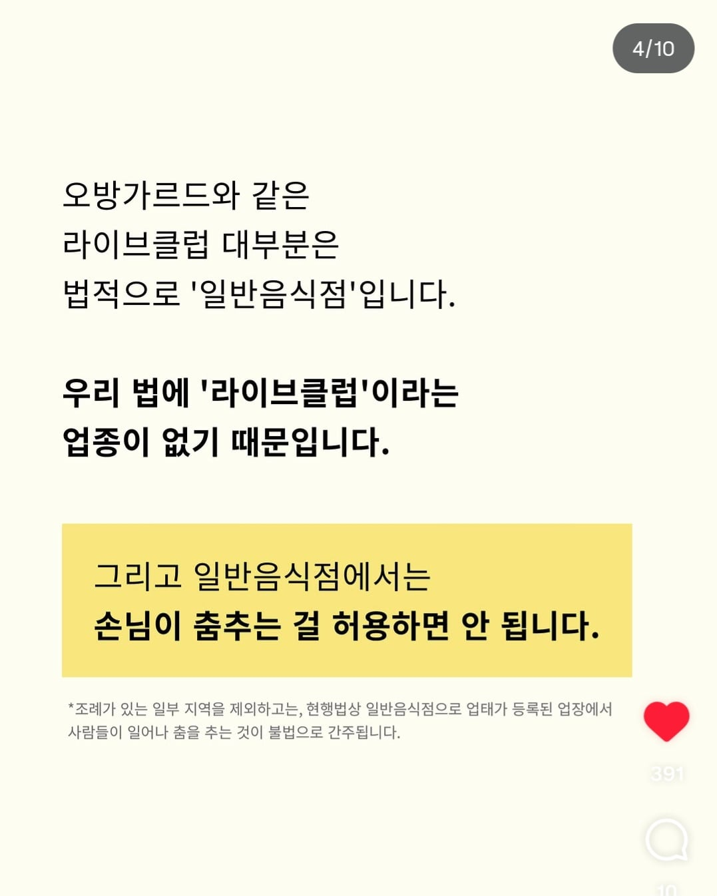
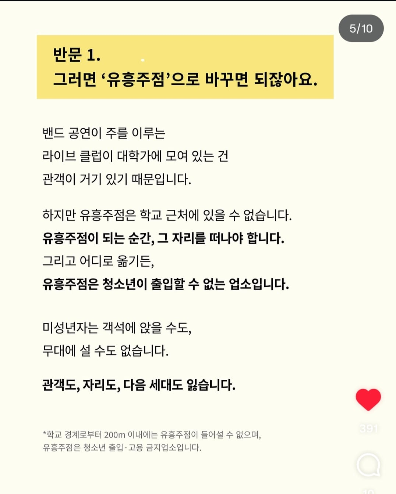
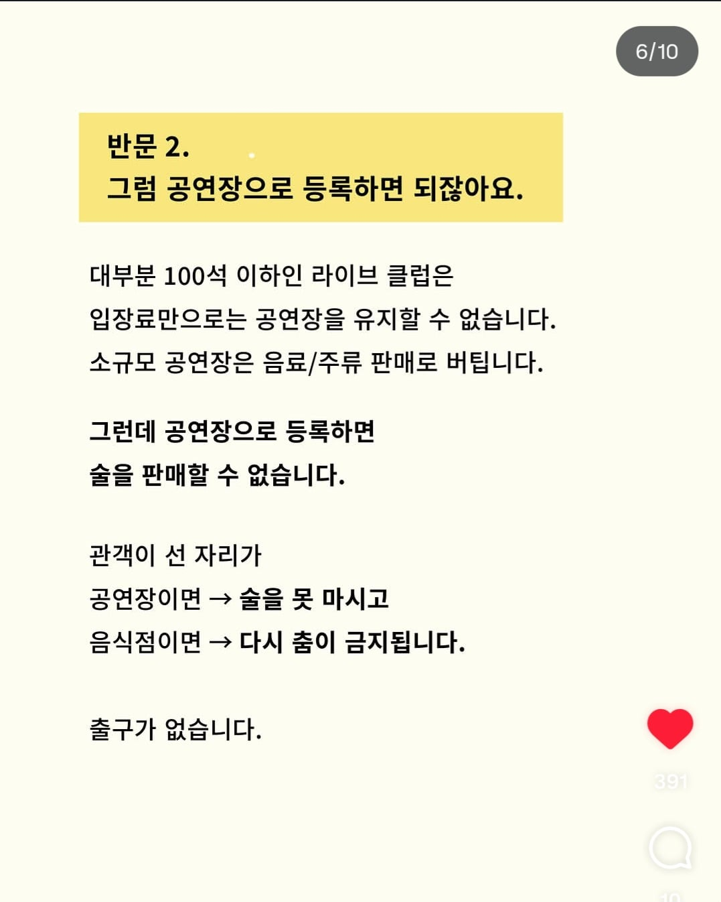
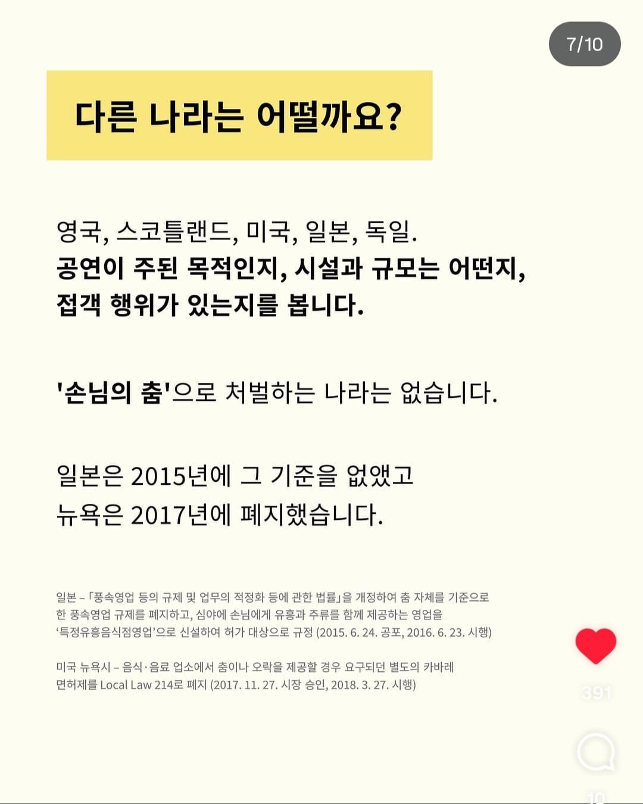
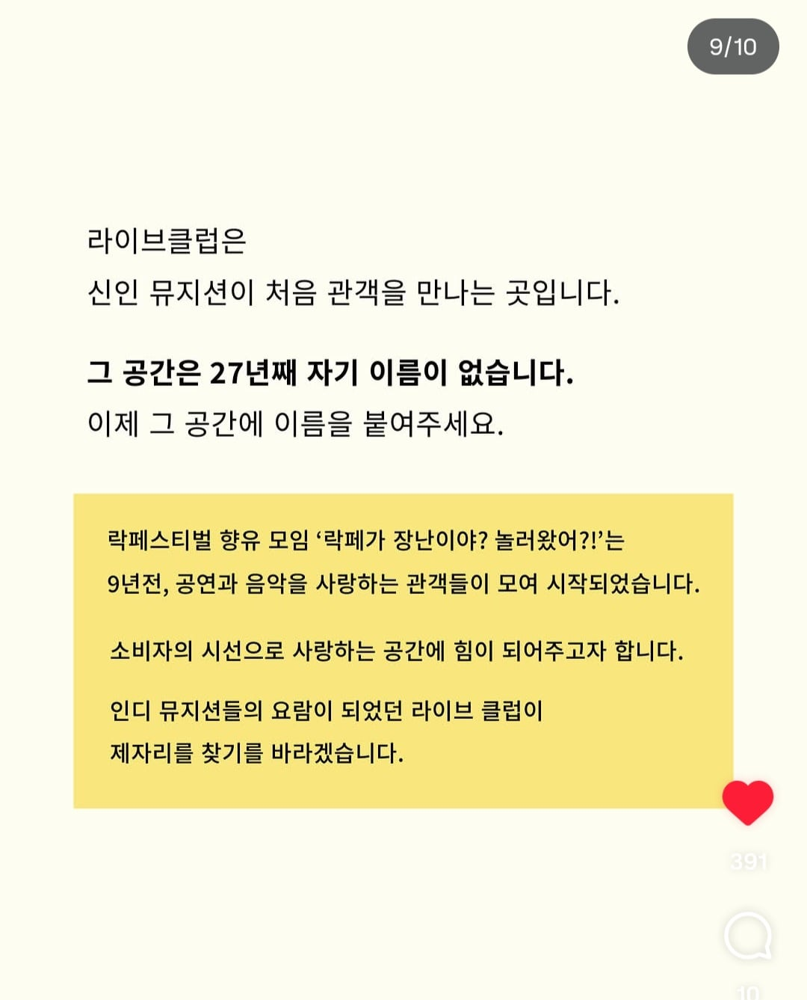
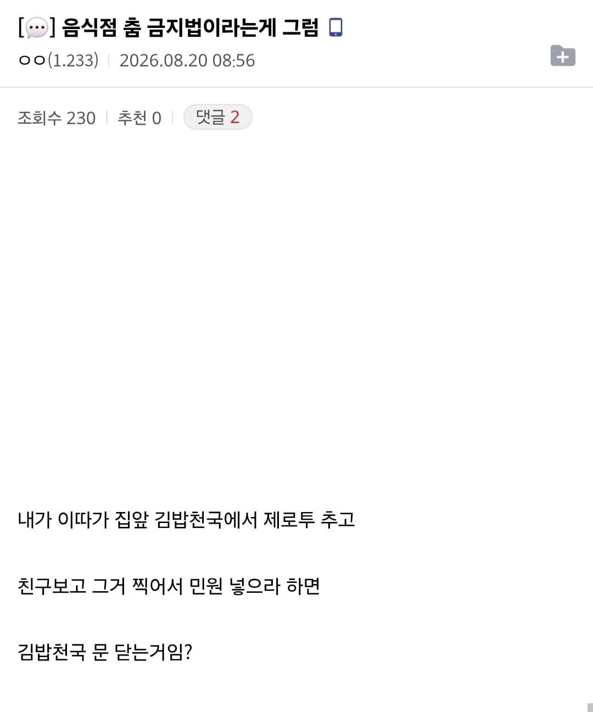

이제는 좀 개선해줘~









이제는 좀 개선해줘~
댓글
수집 당시 댓글 13개
린미 · 8 시간 전
이제 음식점에 불만이 있으면 춤을 추면 되는거야?
네오바람 · 7 시간 전
이거완전 오도루프 가사 고대로아니냐
메밀 · 7 시간 전
댓글에 영포티들 만선이네
양식소고기 · 6 시간 전
왜 저런 법이 생겼냐고? 유흥 업소들이 음식점으로 등록하고 빵댕이 흔들고 세금을 적게 냈음 술을 팔아도 되는 노래방과, 술을 팔면 안되는 노래 연습장도 세금 차이가 커서 노래 연습장으로 간판을 해도 몰래 술을 파는 곳이 있는 것 처럼
피스타치오아몬드 · 6 시간 전
팩트가 아닌 것 : 학교 주변에 들어설수 없다는 것 심의 거쳐서 유해성 없으면 200m 이내에도 들어설수 있음 팩트 : 일반음식점의 세율은 10%, 유흥주점의 세율 은 최소 23%
익명
나도 글쓰고 잘몰라서 찾아보니까 대학교도 금지구역이고 단 심의를 거쳐 영업가능 뭐이래돼있더라 1페이지에 이미 댓글 작성함. 근데 세금문제는 수많은 문제중에 한개고 1. 건물용도가 위락시설이어야함 2. 마이클잭슨이 공연하러와도 유흥업종사자로 분류되어 보건증 필요하다고함 / 해외밴드들도 자주오는데 현실적으로 어려움. 공연자들이 유흥업종사로 분류되는 것도 거부감 매우 높을듯 (머 어디 디시에서본거라 확실치 않음...) 3. 문화관련 지원사업같은게 유흥업 분류되면 법적으로 제외된다고함. 4. 현재 일반세율 10% 해도 큰 수익을 버는 업종이 아님. 제도개선 없이는 업종 접을 수 밖에없음. 애초에 사장님들 투잡뛰시는 분들 실제로 많음.... 평일에 공연없는날은 돈이안돼서 주말만 운영하고 평일에 다른일로 멘징함. 거의 적자인곳 대부분임. 홍대는 모르겠고 지방 공연장들은. (실제로 많이 접음) 5. 근데 왜하냐? 문화에 대한 사랑 열정 진짜 고거임 ㅋㅋ 등등 여러문제가 있다고해
하레군 · 6 시간 전
맥도날드 행사한다고 주문할때 노래부르면서 춤춘거 다 영업정지 대상인거네
승자의줘팸터 · 5 시간 전
반문1에서 이해안됌. 왜 굳이 미성년자가 와야되는지도 모르겠고, 미성년자가 꼭 온다면 술은 포기하던지 둘중하나 골라야된다고 봄. 그리고 얼마나 전통있나 했더니 2018년 개업이네 이 정도면 알고 오픈했어야 하는거 아니냐
로또당첨연금복권당첨제발 · 5 시간 전
규제 존나 한다면서 싫어하는새기들이 지들 입맛에 맞는 규제는 존나 좋아함
쓸데없는거설명하는거좋아함 · 4 시간 전
자 정리를 해보자 음식점으로 등록하면 춤못춤 공연장으로 등록하면 술 못먹음 유흥주점으로 등록하면 학교근처에 못있고 미성년자 못들어옴 이거잖아? 이런문제가 있으니까 술도먹고 춤추고 노래도 가능하고 학교근처에도 있게 해달라 이게 요구임 술먹고 춤추고 노래부르는곳인데 미성년자도 출입하게해달라는건데 솔직히 설득력 떨어짐 본문 말고 다른 일반유흥주점하고 차별화되는 다른 주장을 해야할것같음
화이트커피 · 4 시간 전
미성년자가 술집에 못들어가는것은 아닌듯한데요! 술집에가서 음료수 먹을수도 있고! 술은 팔아도 먹어도 안되는거고! 그런거야 법적으로 잘 맞추면 되는거고 음악들으러 가서 음료수 먹고 춤출수 있는거고!
닌닌이다 · 1 시간 전
유흥업소로 등록하면 거기서 공연하려는 사람은 유흥업종사자여야 한대 그러면 일반 인디 밴드나 가수 그런 사람들은 현실적으로 거기서 공연을 할 수가 없대 라고 위에 글쓴붕이가 댓글달았는데 나도 잘 몰라
뺍쁌 · 2 시간 전
서울에 클럽들 양식점으로 등록한 곳들 ㅈㄴ 많을 건데?????? 뒷돈찔러줘서 괜찮은 건가????? 당장 브라운만 해도 요리주점으로 해놧음